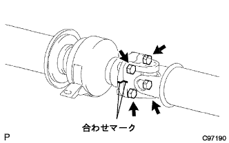
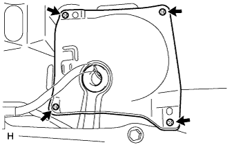

フューエル タンクASSY（1NZ-FE(4WD)） 取り付け |
| 1. フューエルカットオフ バルブASSY(チューブ ツキ)取り付け |
新品のガスケットをフューエルタンクに取り付ける。
新品のフューエルカットオフバルブ全周に軽油を塗布し、無理な力を加えず、ガスケットがタンク内に落ち込まないように注意して挿入する。
フューエルカットオフバルブの下端面とガスケットのすき間がなく、確実に挿入されていることを確認する。
| 2. フューエルタンク クッション NO.1取り付け |
フューエルタンククッションNo.1を取り付ける。
| 3. フューエル タンクASSY取り付け |
 |
ボルト4本で、フューエルタンクASSYを取り付ける。
 |
パーキングブレーキケーブルのクランプを取り付ける。
| 4. フューエルカットオフ バルブASSY(チューブ ツキ)接続 |
パイプとコネクターの軸を合わせて“カチッ”と音がするまで挿入する。
| 5. フューエルタンク メインチューブ接続 |
パイプとコネクターの軸を合わせて“カチッ”と音がするまで挿入する。
| 6. フューエルタンク ツウ フィラパイプ ホース接続 |
 |
フューエルタンクツウフィラパイプホースをフューエルタンクに接続する。
| 7. ブリーザチューブフューエルホースNo.1接続 |
 |
ブリーザチューブフューエルホースNo.1をクランプに取り付ける。
ブリーザチューブフューエルホースNo.1をフューエルタンクに接続する。
| 8. フューエルタンク プロテクタ NO.1取り付け |
 |
ボルト4本で、ダイナミックダンパおよびフューエルタンクプロテクタNo.1を取り付ける。
| 9. プロペラシャフトASSY RR取り付け |
|  |
インタミディエイトシャフトASSYおよびプロペラシャフトASSY RRの合わせマークを合わせる。
 |
プロペラシャフトASSY RRおよびディファレンシャルフランジの合わせマークを合わせる。
ボルト8本、ワッシャおよびナット各8個で、プロペラシャフトASSY RRを取り付ける。
| 10. エキゾースト パイプASSY CTR取り付け |
新品のガスケットを介して、エキゾーストパイプASSY FRにエキゾーストセンタパイプASSYを差し込む。
エキゾーストパイプサポート2個でエキゾーストセンタパイプASSYを取り付ける。
 |
新品のクランプおよびボルトでクランプを図の位置にし、ボルトを締め付ける。
| 11. フューエルセンダゲージASSY取り付け |
スクリュー5本で、フューエルセンダゲージを取り付ける。
| 12. フューエルサクションチューブASSY W/ポンプ&ゲージ取り付け |
新品のガスケットを介して、フューエルサクションチューブASSY W/ポンプ & ゲージを取り付ける。
図のA部にフューエルホースのペイントマークを合わせるように接続し、クリップのつまみ部が図の範囲内に入るようにセットする。
 |
フューエルサクションチューブASSY W/ポンプ & ゲージおよびフューエルタンクベントチューブセットプレートのマークを合わせ、ボルト8本で取り付ける。
| 13. フューエルタンク メインチューブ接続 |
 |
メインチューブをサクションプレートのプラグに差し込み、チューブジョイントクリップを取り付ける。
| 14. リヤフロアサービスホール カバー NO.2取り付け |
|  |
スクリュー4本で、リヤフロアサービスホールカバーNo.2を取り付ける。
| 15. リヤフロアサービスホール カバー取り付け |
スクリュー４本で、リヤフロアサービスホールカバーを取り付ける。
| 16. リヤシートクッションASSY取り付け |
 |
リヤシートクッションASSY後部のフックをかん合させる。
リヤシートベルトを、リヤシートクッションカバー & パッド後部のゴムバンドに通す。
リヤシートクッションASSY前部のフックをかん合させる。
| 17. リヤシートバックASSY取り付け |
 |
ボルト2本をでリヤシートバックASSYを取り付ける。
クリップ2個を取り付ける。
| 18. バッテリマイナスターミナル取り付け |
| 19. 燃料漏れ点検 |
燃圧のかかった状態で燃料系統に漏れがないことを確認する。
| 20. 排気ガス漏れ点検 |
| 21. バッテリターミナル脱着時の初期化 |
参照